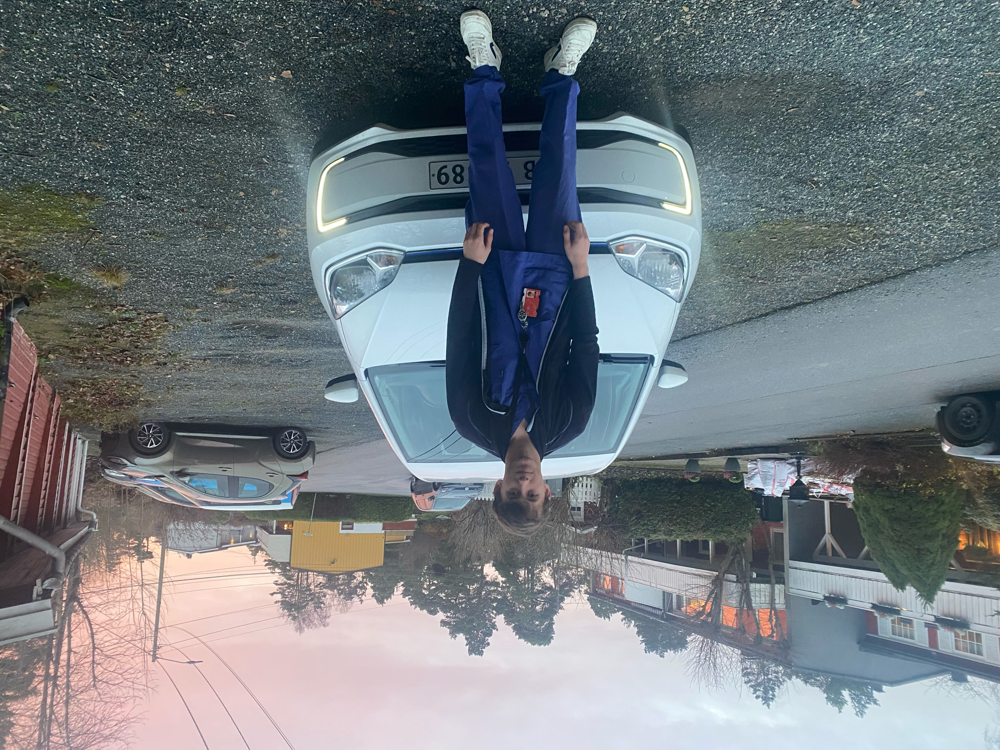
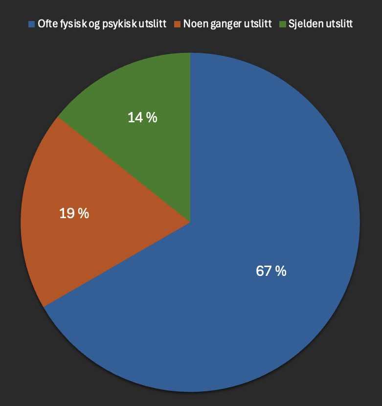
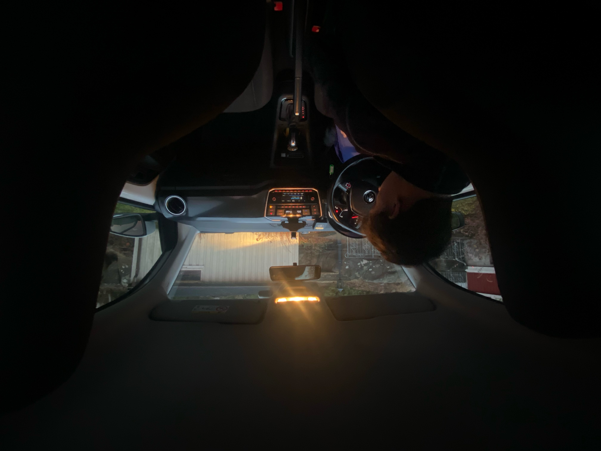

- Lønnsforbedringer som gjenspeiler kompleksiteten i arbeidet og kompetansen til de ansatte
- Fleksible arbeidstidsordninger
- Ansette og utvikle bedre ledere
- Tilby flere kompetansehevende tiltak og muligheter for videreutdanning
- Øke bemanningen
- Helhetlig ivaretakelse av fysisk og psykisk helse
Brage jobber som hjemmesykepleier i Fredrikstad kommune og vanligvis har han 15-17 pasienter i løpet av en vakt. Disse pasientene har ulike behov, og Brage må tilpasse seg etter hver enkelt. Noen pasienter trenger hjelp til å stå opp, mens andre trenger hjelp til å spise. Brage har også pasienter som trenger medisiner, sårstell og personlig hygiene. Han kan bruke alt fra 5 minutter til 1 time hos hver pasient, avhengig av hva pasienten trenger. Under ser du en tidslinje som viser hvordan er vakt kan se ut for Brage. Det er ikke alltid en vakt går som planlagt og utfordringer dukker stadig opp. (kortet ned version av vakt)
Start av vakt
Brage starter dagen med en gjennomgang av pasientlistene, før han begynner på en travel runde hvor han besøker pasienter i deres hjem for å gjøre ulike oppgaver etter behov. En av kollegaene til Brage er syk, så han må ta på seg ekstra pasienter.
Første pasient
Brage kjører nå til første pasient, en eldre dame som trenger hjelp med personlig hygiene og medisinsk tilsyn. Blir et raskt stell på grunn av tidsmangel.
Pasient nummer to
På vei til pasient nummer to, en eldre mann som behøver hjelp med medisiner. Må prioritere bort sårstell på grunn av tidsmangel.
Ekstra pasient
Ekstra pasient på grunn av sykefravær, en eldre dame som trenger hjelp med sårstell.
Pasient nummer fire
Pasient nummer fire, en eldre mann som behøver hjelp med å spise. Pasienten får ikke i seg maten. Brage har ikke mer tid å gå på, og må dra før pasienten har spist.
Pasient nummer fem
Brage er nå hos pasient nummer fem, en eldre dame som trenger hjelp med personlig hygiene. Tankene er på forrgie pasient som han ikke fikk gitt den oppfølgingen han ønsker.
Ekstra pasient, nummer seks
Andre ekstra pasient for dagen, en eldre mann som trenger hjelp med medisiner.
Pasient nummer syv
Pasient nummer syv, en eldre dame som trenger hjelp med medisiner og sårstell. Pasienten kunne trengt noen å snakke med, men på grunn av tidsmangel må Brage reise videre.
Siste pasient for dagen
Siste pasient for dagen, en eldre mann som trenger hjelp med personlig hygiene og medisiner.
Ferdig med pasienter for dagen
Brage er nå ferdig med alle pasientene for dagen og kan dra hjem. En lang og hektisk dag er over med ekstra tidspress og utfordringer grunnet sykdom i bemanningen. Brage kan nå dra hjem og lade opp til neste vakt.
Hjemmesykepleiere står i frontlinjen av norsk helsetjeneste, og med
et økende press og redusert bemanning, blir hverdagen en prøvelse
for både ansatte og pasienter.
Gjennom en samtale med Brage Madsen, en hjemmesykepleier med flere
års erfaring, får vi innblikk i de reelle utfordringene som preger
sektoren.
Flere helsearbeidere trengs
Prognoser for fremtiden viser at behovet for helsepersonell i Norge vil stige betydelig som følge av demografiske endringer. Med en aldrende befolkning vil etterspørselen etter helsetjenester øke i takt med antallet eldre, noe som setter ytterligere press på et allerede stramt bemanningssystem. Kombinert med det faktum at mange av dagens helsearbeidere nærmer seg pensjonsalder, skapes en bekymringsfull situasjon hvor den eksisterende mangelen på sykepleiere og annet helsepersonell kan bli mer akutt. Dette understreker behovet for proaktive tiltak for å tiltrekke og beholde flere ansatte i helsesektoren, slik at fremtidens pasientbehov kan møtes med tilstrekkelig kompetanse og omsorg.
Hverdagen preget av tidsmangel og høyt tempo
En typisk arbeidsdag for Brage starter tidlig om morgenen med en gjennomgang av pasientlistene, etterfulgt av en travel runde hvor han besøker pasienter i deres hjem. Arbeidsdagen består av alt fra personlig hygiene til medisinsk tilsyn, og arbeidsmengden har økt betraktelig de siste årene. Ifølge Brage blir en allerede hektisk dag enda mer krevende når sykefravær rammer teamet.
«Hvis en kollega er syk og det ikke finnes vikar, må vi dele arbeidet mellom oss som allerede er på vakt. Dette går utover hvor mye tid vi kan bruke på hver pasient» Resultatet er mindre tid til menneskelig omsorg og økt tidspress, noe som kan føre til risikoer, særlig i trafikken når de kjører mellom pasientene.
Vi har vært i kontakt med 20 helsearbeidere og spurt om hvordan arbeidsmengden påvirker deres fysiske og psykiske helse.
Stresshåndtering og arbeidsmiljø
Brage beskriver stress som en konstant følgesvenn, men han mener at erfaringen hjelper ham å takle presset. «Jeg føler ikke at jeg stresser mye, men jeg kjenner det på kroppen når dagen blir ekstra hektisk,» forteller Brage. Han nevner at det kan påvirke arbeidsmiljøet når klager og frustrasjon blant kollegene øker.
Underbemanningens innvirkning på pasientomsorgen
Pasientene lider også under konsekvensene av underbemanning. Mange eldre føler seg ensomme, og når hjemmesykepleierne har dårlig tid, blir de små, men viktige samtalene ofte ofret. «Mange pasienter setter pris på en prat, men når vi har dårlig tid, er det ikke alltid vi rekker det» Det er ikke bare de eldre som blir påvirket; deres familier merker også forsinkelsene og redusert pleie. Dette kan føre til klager og frustrasjon fra pårørende som ser sine nærmeste få mindre oppmerksomhet enn de burde.
"Når jeg blir spurt om hvordan jobben påvirker meg psykisk eller fysisk, må jeg være ærlig og si at det tidvis merkes. Selv om jeg har tilpasset meg presset gjennom min arbeidsperiode og lært meg å håndtere stress, er det noen dager hvor det blir ekstra tungt. Spesielt når vi er underbemannet og arbeidsmengden øker betydelig, kjenner jeg det i kroppen – som en trøtthet som ikke helt slipper taket. Det psykiske presset kommer av å vite at pasientene ikke skal merke stresset mitt, noe som kan være krevende når tiden er knapp. Jeg har ikke vurdert å bytte jobb foreløpig, men det er klart at slike tanker kan dukke opp når dagene blir tøffe og belastningen varer hele vakten. Samtidig føler jeg et stort ansvar for pasientene mine og vet at jobben jeg gjør er viktig, noe som motiverer meg til å fortsette."
Håp for forbedring
Til tross for utfordringene ser Brage noen tiltak som kan lette situasjonen. Bedre planlegging ved hjelp av digitale verktøy har hjulpet noe, men hovedutfordringen er fortsatt personalmangel. «Vi trenger at myndighetene forstår viktigheten av å holde ressursene i helsetjenesten stabile,» sier han. Det å styrke bemanningen vil ikke bare gjøre arbeidshverdagen lettere, men også gi pasientene den omsorgen de fortjener.
Historien om Brage og kollegene hans er en påminnelse om de stille heltene som står opp for å gi pleie og omsorg til de mest sårbare. For å sikre kvaliteten på pasientomsorgen i framtiden, må vi adressere underbemanning og anerkjenne arbeidet hjemmesykepleierne gjør, før flere velger å forlate yrket for godt.